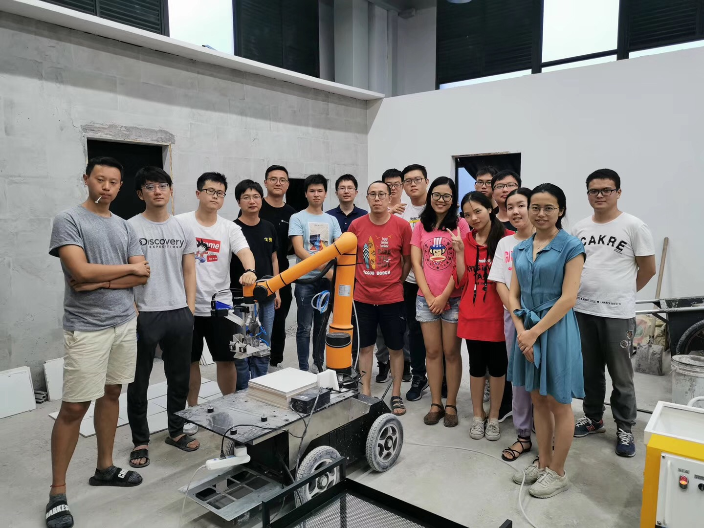

Selected Projects
Tiling Robot Design
In this project, I participated in a tiling robot for room and hall. I am mainly responsible for Aubo Force Feedback System and Mortar Injection process. To build Force Feedback System, I attempted to resort to torque sensor but the weight of sensor seriously affect the working efficiency of tiling. So, a simpler but reliable method is necessary.
1. Aubo Force Feedback System
I visited Aubo Offcial SDK and collected electrical current of every joint. From a paper , there should be a linear regression model for currents and joint torques. In this way, I used torque sensor to collect torques and corresponding currents. After that, I trained a linear regress model to predict torques by currents.
Then, based on equation ,
I used MoveIt! to obtain the joint states and Jacobian
matrix based upon URDF of Aubo Robot to compute the force and torque in the end-effector with the help of
Eigen
in C++ for matrix evaluation. The computed force and torque in the end-effector are published in a /Wrench
topic
as WrenchStamp msg with a frequency of 100 hz.
Then, I put forward a force feedback system. The principle is that the laser in the end-effector will keep inspecting the distance between the end-effector and object and reminds system to mark current force as force threshold when the distance becomes smaller than the distance threshold which is set according to experience in various working environments. Then, as the end-effector constantly closes to object, the system will examine whether the force difference between current force and force threshold is larger than the set force_difference_threshold. Once the system confirms the result that force difference is too large, the state of robot will be updated as touched and follow up a series of operations according to the robot task.
2. Mortar Injection
"